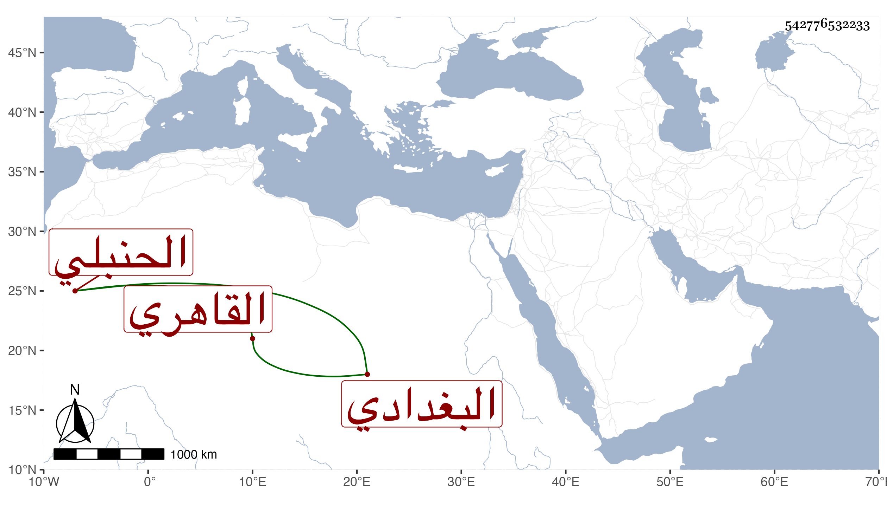

0902Sakhawi.DawLamic.ITO20230111-ara1.EIS1600.542776532233
Biography ID: 542776532233
535
علي بن إبراهيم بن عبد الوهاب بن عبد السلام نور الدين بن البرهان البغدادي الأصل القاهري الحنبلي الماضي أبوه وهو سبط الشمس محمد بن معروف التاجر . نشأ في كنف أبويه فقرأ القرآن وسمع الحديث وجلس بعده للتجارة في حانوته وما قنع بل تعانى السكر وغيره ولم يحصل على طائل . مات في ربيع الأول سنة ست وثمانين بعد وفاة أخت له بأيام وأظنه جاز الثلاثين عفا الله عنه .
